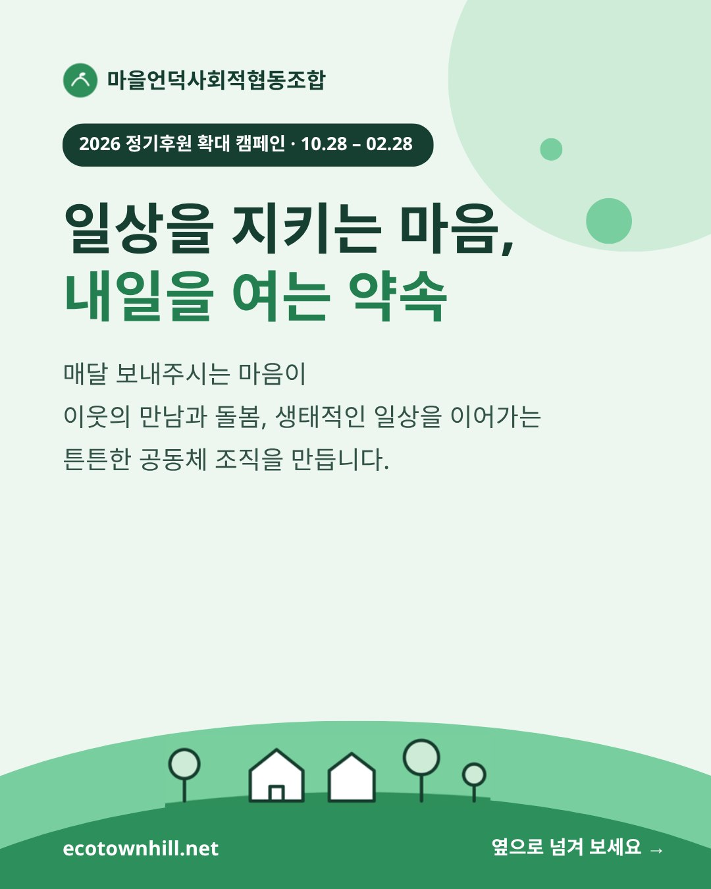
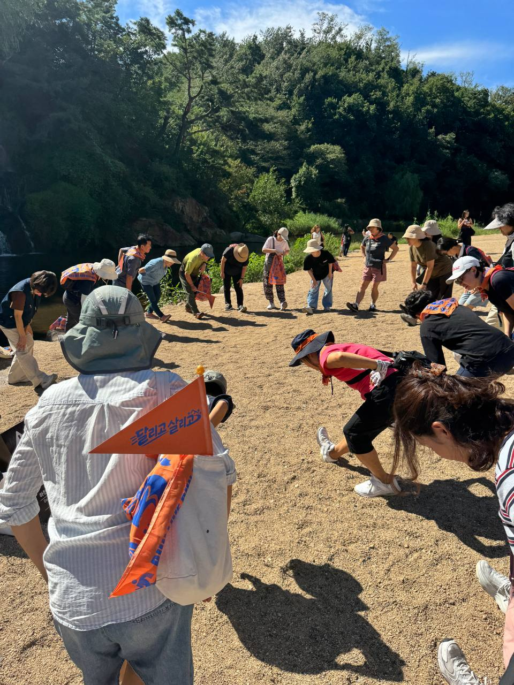
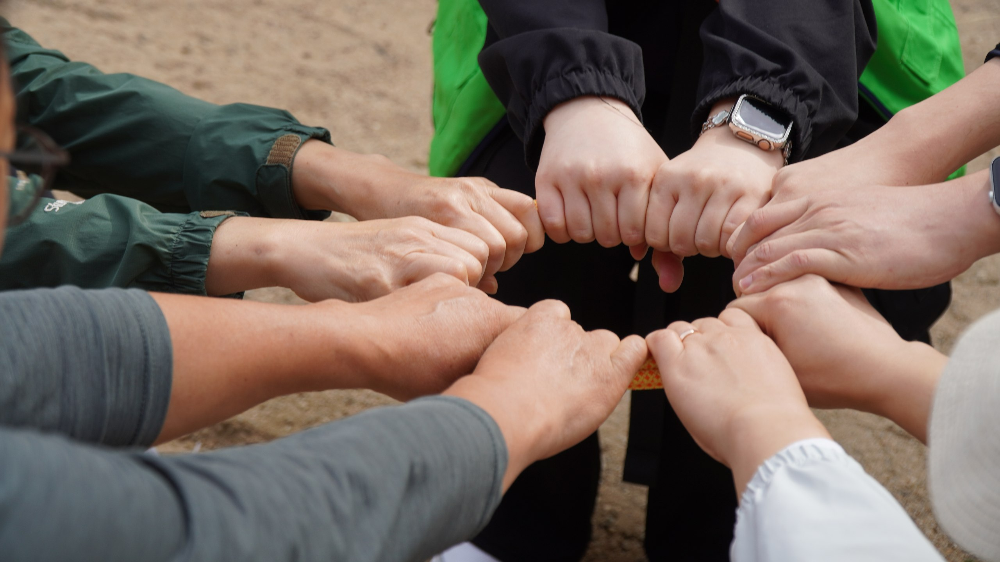
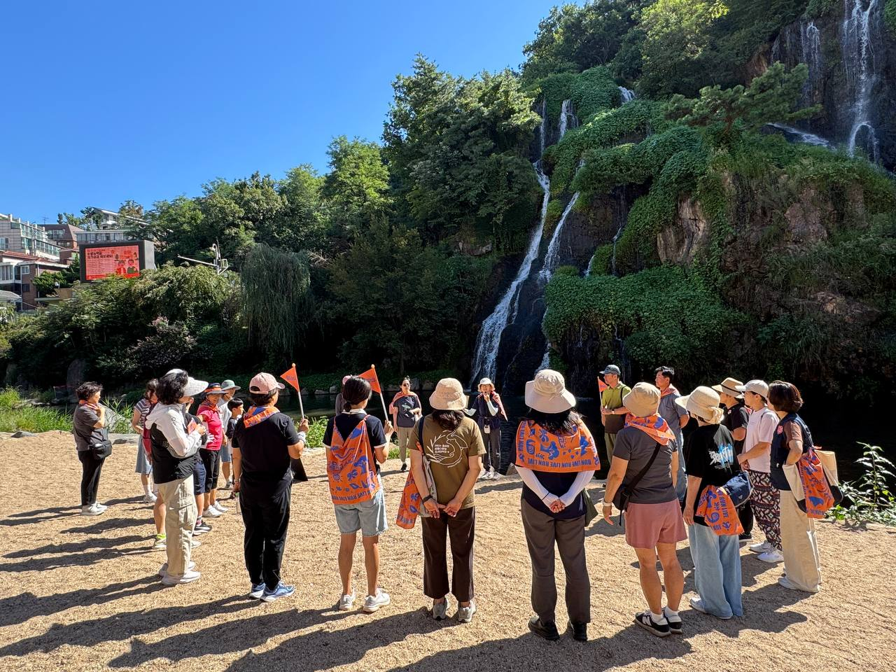
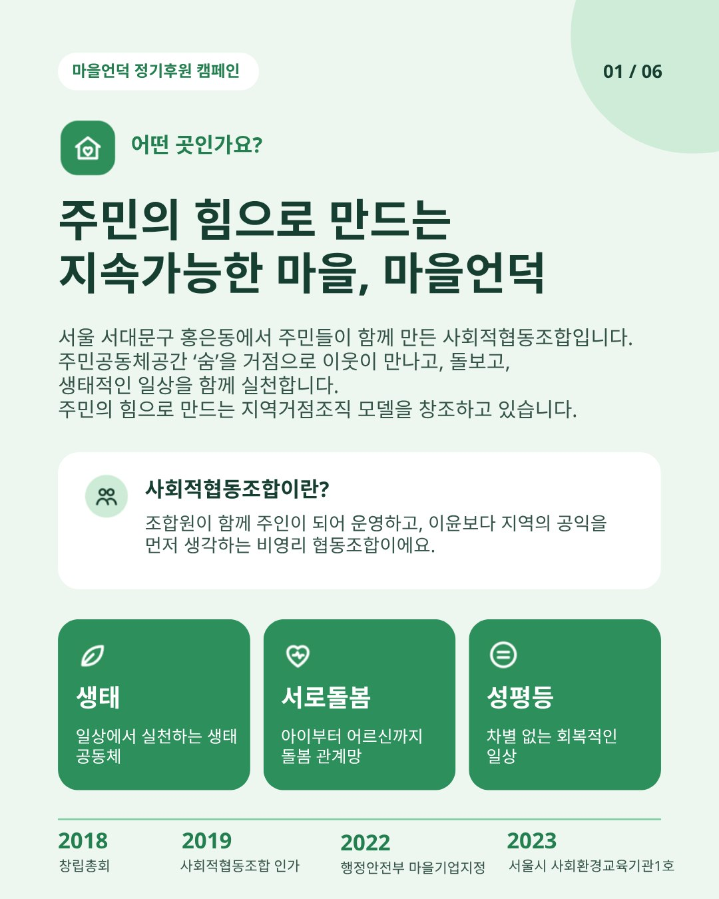

생태
일상에서 실천하는 생태 공동체
2026 정기후원 확대 캠페인 · 10.28 – 02.28
이웃이 만나고, 서로 돌보며,
생태적인 삶을 함께 실천하는 마을언덕.
여러분의 꾸준한 참여가 오늘의 활동을 이어가고
내일의 변화를 준비하는 힘이 됩니다.





우리는 이런 곳이에요
서울 서대문구 홍은동에서 주민들이 함께 만든 사회적협동조합입니다. 주민공동체공간 '숨'을 거점으로 이웃이 만나고, 돌보고, 생태적인 일상을 함께 실천합니다. 주민의 힘으로 만드는 지역거점조직 모델을 창조하고 있습니다.
조합원이 함께 주인이 되어 운영하고, 이윤보다 지역의 공익을 먼저 생각하는 비영리 협동조합이에요.
마을언덕이 지향하는 가치
일상에서 시작해 이웃과 지역으로 이어지는 변화.
마을언덕은 세 가지 가치를 중심으로 활동합니다.
일상에서 실천하는 생태 공동체
아이부터 어르신까지 돌봄 관계망
차별 없는 회복적인 일상
함께 쌓아 온 시간
주민과 함께한 작은 실천들이 모여
지역의 일상에 의미 있는 변화를 만들어가고 있습니다.
자원순환
10만 장 +
종이팩 수거. 연 3,000명 이상 주민 참여. 종이팩 조례 제정 기여(22년 ~ 현재)
탄소감축
약 7톤
플라스틱뚜껑, 종이팩, 브리타정수기필터 수거로 탄소감축량 약 7,116kg(22년 현재)
환경교육
약 10,000명
출강 700시간 이상. 교재 14종. 교구 10종 (22년 ~ 현재)
주민 성장
38명
주민이 강사가 되어 지역 녹색일자리로, 지역사회의 환경지킴이로 (23년~26년)
서로돌봄
연 100여 명
매월 둘러앉아 나누는 서로돌봄
함께하는 건강한 마을
82명 · 1000만보
함께 걷고 미션 성공 기부금으로 지역기관에 기부(2026년 신규사업)
마을언덕의 이야기를 영상으로
마을언덕과 함께해 온 사람들의 이야기를 만나보세요.
여러분의 마음이 어떤 일상을 지키고, 어떤 내일을 여는지 전합니다.
마을언덕의 활동과 그 안에서 만들어지는 변화를 소개합니다.
함께하고 싶은 마음이 드셨다면 후원으로 동행해 주세요.
기존 후원금의 쓰임
월 고정운영비
1,000만원
약 10% 후원금이 채우는 몫
주민 누구나 머무는 공간 '숨'의 전기·수도·관리비
공간이 늘 열려 있도록 살피는 사람의 손길
추가 후원이 필요한 이유
지금의 후원금은 고정운영비의 약 10%입니다.
공간과 활동을 안정적으로 이어가려면 정기후원이 지금의 세 배는 되어야 합니다.
110만 원
지금
330만 원
캠페인 목표 (월)
향후 후원금 활용 계획
환경교육
누구나 접근할 수 있는 교육자료와 지역 기반형 교재·교구 개발
건강과 서로돌봄
함께 달리며 건강을 챙기고 이웃을 살피는 주민 서로돌봄 프로젝트
생태·환경
우리 동네 하천과 산을 주민이 함께 지키는 생태·환경 활동
일반 후원금은 사업을 지정하지 않고, 마을언덕의 안정적인 운영과 주요 사업에 집중해 쓰입니다.
파트너십을 통한 지정 후원금은 사업을 지정할 수 있습니다.
함께할 수 있는 방식으로
지금의 일상을 지키는 마음도,
마을의 내일을 준비하는 약속도 모두 소중합니다.
01 / 기존 후원회원
지금까지 보내주신 마음에 조금 더 힘을 보태주세요. 여러분의 증액이 마을언덕의 일상을 지키는 힘이 됩니다.
증액 신청하기 →02 / 새로운 후원회원
부담 없는 금액으로 마을언덕의 이웃이 되어주세요. 작은 정기후원이 모여 꾸준한 변화를 만듭니다.
정기후원 시작하기 →03 / 더 큰 변화를 위한 동행
마을언덕이 새로운 활동을 준비하고 지속할 수 있도록 든든한 힘이 되어주세요.
고액 정기후원 알아보기 →04 / 기업·법인 및 단체
마을언덕과 함께 지역의 변화를 만들어갈 기업·법인 및 단체의 참여를 기다립니다.
약정 후원 문의하기 →마을언덕과 함께해 주세요
함께할 수 있는 방식으로 마음을 보태주세요.
오늘의 활동을 이어가고, 내일의 변화를 함께 준비해요.